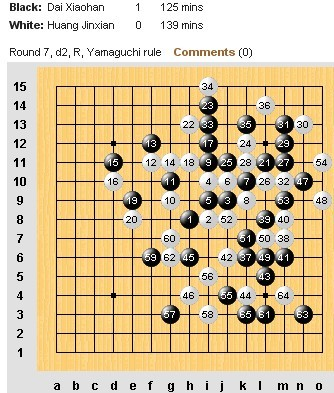
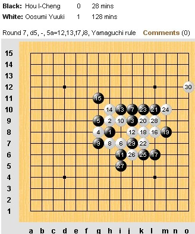
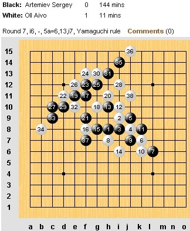
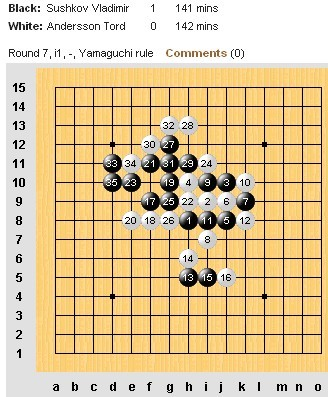
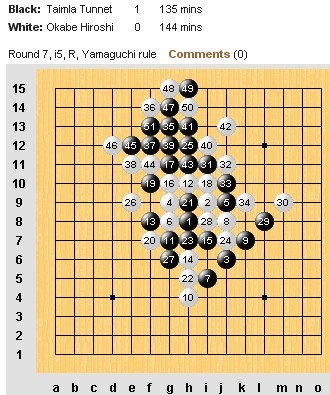
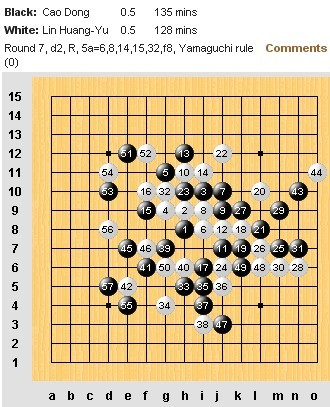

世锦赛第七轮榜首之争战和
作者：通讯员
原文网址链接：http://www.rifchina.com/Article/ShowArticle.asp?ArticleID=6468
第十二届五子棋世界锦标赛A组第七轮，中国选手戴晓涵与黄金贤内战，黄金贤第62手走出勺子，崩盘负。中华台北侯宜呈 (Hou I-Cheng)第25手送日本日本大角友希 (Osumi Yuki)禁手自杀。爱沙尼亚爱・欧艾沃(Aivo Oll )仅用11分钟战胜俄罗斯谢・阿特米耶夫 (Sergey Artemiev)。俄罗斯弗・苏切科夫 (Vladimir Sushkov)胜瑞典托・安德森 (Tord Andersson)。爱沙尼亚特・泰姆拉 (Tunnet Taimla)战胜日本冈部宽 (Okabe Hiroshi)。
曹冬与林皇羽大战263分钟战和，携手同积5.5分位居榜首。 第八轮比赛将在北京时间今晚九点开始






［此帖子已被 蓝天蓝 在 2011-8-9 15:42:31 编辑过］
 猜对一盘
猜对一盘